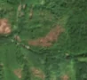
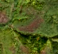

1,4 ha · Dulcele, com. Gurahonț
văzută schimbată prima dată pe 17 sept. 2026


Autorizația cea mai apropiată nu acoperă tăierea: schimbarea cade în afara parcelei autorizate.
APV 2600278500430 · Ocolul Silvic Sebiș Moneasa, la 230 m
Ce se vede în poze: În poza detaliată din 2016 zona marcată era acoperită de pădure deasă. În «înainte» și «după» apare o fâșie de teren golit, brun-roșiatic, în timp ce pădurea din jur rămâne verde, deci copacii au fost tăiați.